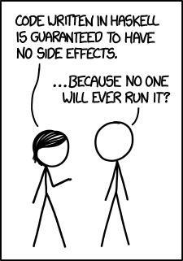
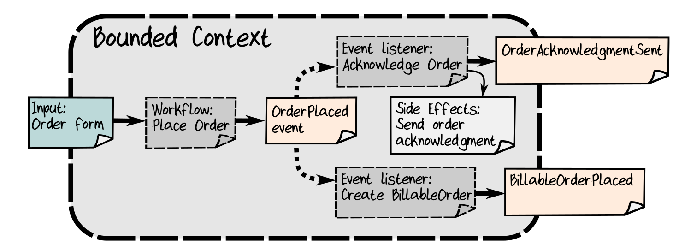
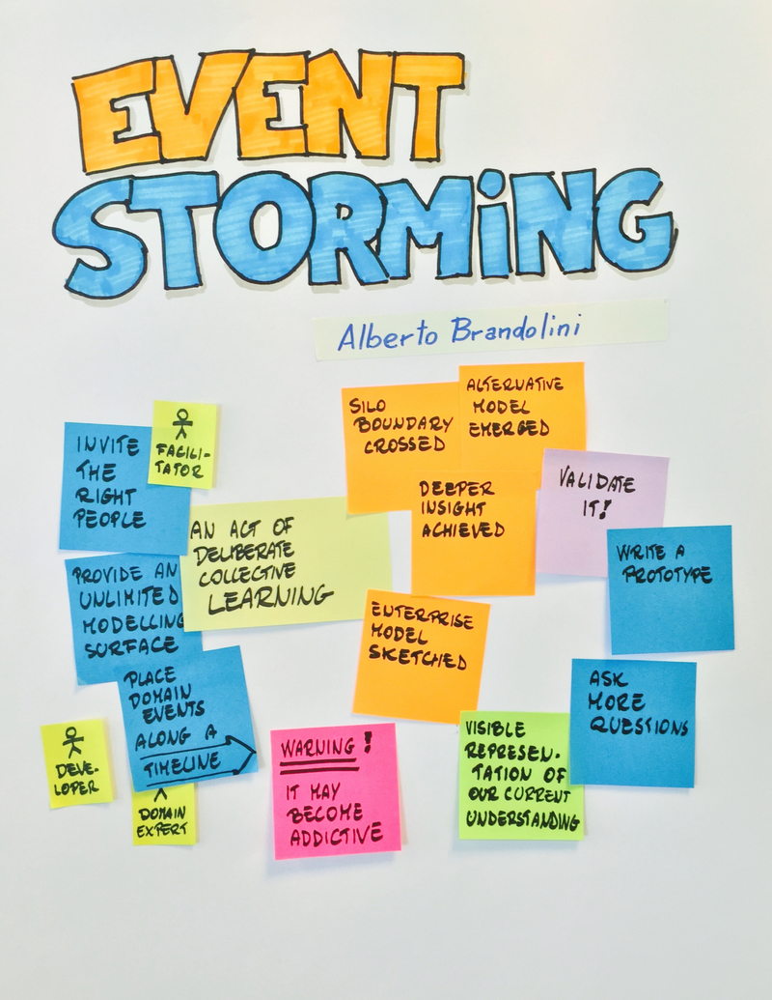

<!DOCTYPE html>
<html lang="en">
  <head>
    <meta charset="utf-8" />
    <meta name="viewport" content="width=device-width, initial-scale=1.0, maximum-scale=1.0, user-scalable=no" />

    <title>Funktionale Programmierung in JavaScript und TypeScript</title>
    <link rel="stylesheet" href="./css/reveal.css" />
    <link rel="stylesheet" href="./css/theme/sky.css" id="theme" />
    <link rel="stylesheet" href="./css/highlight/zenburn.css" />
    <link rel="stylesheet" href="./overwrites.css" />
    <link rel="stylesheet" href="./css/print/paper.css" type="text/css" media="print" />

  </head>
  <body>
    <div class="reveal">
      <div class="slides"><section  data-markdown><script type="text/template">
<!-- .slide: data-background-image="images/cc_title_3.png" data-background-color="black" -->

<h3 style="color: white; text-transform: none; position: relative; top: 90px">
  Functional Programming<br /> and <br />Domain Driven Design<br />
  <span style="font-style: italic; font-size: 80%">a match made in Heaven!</span>
</h3>

<p style="color: white; text-transform: none; margin-top: 150px">@MarcoEmrich<br/></p></script></section><section ><section data-markdown><script type="text/template">
<!-- .slide: data-background="images/egg.jpg"  -->

# Natural born
# Coder?
</script></section><section data-markdown><script type="text/template">
## OOP Years > FP Years
</script></section><section data-markdown><script type="text/template"><!-- .slide: data-background="images/functional_background.jpg"  -->

## Never on a real Project
<ul>
  <li style="font-size: 80px">Haskell</li>
  <li style="font-size: 80px">Elm</li>
</ul>


<aside class="notes"><p>looks like I&#39;m not the only one with this issue</p>
</aside></script></section><section data-markdown><script type="text/template">### XKCD


</script></section><section data-markdown><script type="text/template"><!-- .slide: data-background="images/functional_background.jpg"  -->

## Functional Background

<ul>
<li style="font-size: 80px">ReasonML</li>
<li style="font-size: 80px">Functional TypeScript</li>
<li style="font-size: 80px">Functional JS (Ramda)</li>
</ul>

<aside class="notes"><p>first let me tell you about my biases, I&#39;m currently doing reasonML on a</p>
</aside></script></section></section><section ><section data-markdown><script type="text/template"><!-- .slide: data-background="images/sky.jpg" -->

# FP <span style="color:red">&hearts;</span> DDD

<aside class="notes"><p>Who of you uses Domain Driven Design
Who of you uses Functional Programming (not necessarily as programmer)
compass</p>
</aside></script></section><section data-markdown><script type="text/template"><!-- .slide: data-background="images/wrestling.jpg" -->

## What is better suited for **DDD**?

# **OOP** or **FP**


<aside class="notes"><p>so the only answer I can give you &quot;to what is better suited for DDD, OOP of FP?&quot;</p>
</aside></script></section><section data-markdown><script type="text/template">
> It depends&trade;

&mdash; any Consultant, ever!

<aside class="notes"><p>I would rather advise you to do it like the JS community - make let no var
I mean its a complex thing, there are many contexts and many variable,</p>
</aside></script></section><section data-markdown><script type="text/template"><!-- .slide: data-background="images/compass.jpg" -->


<div style="position: relative; left: -240px; top: 10px">
  <h1>History</h1>
  <h1>of</h1>
  <h1>DDD</h1>
</div>
</script></section><section data-markdown><script type="text/template"><!-- .slide: data-background="images/compass.jpg" -->


<div style="position: relative; left: -240px; top: 10px; visibility: hidden">
  <h1>History</h1>
  <h1>of</h1>
  <h1>DDD</h1>
</div>

<aside class="notes"><p>if we took a look at the history of ddd. first were the blue book, than the red book, then there came many many others,</p>
<p>maybe not that many</p>
<p>there are a lot of blogs and articles, all over the internet</p>
<p>damn - there are even stack over question</p>
<p>OOP is coming from the Blue Book</p>
<p>Now Guess how big is the functional part of it?</p>
<p>it turns out, not so much</p>
<p>there is not much literature on FP-DDD, but there are some books</p>
</aside></script></section><section data-markdown><script type="text/template">


<aside class="notes"><p>this is Scotts Wlaschin Book - I would call it the bible of fp-ddd. I cant recommend it enough.</p>
<p>Most things I know about FP-DDD, I learned from the book.</p>
<p>When I realized Scott is also here and have his talk before me, I thought - O shit</p>
<p>What could I possibly add? I hope there are still some insights in this talk, you find valueable...</p>
<p>Who has been in Scott&#39;s Talk yesterday?</p>
<p>I used to say, that this it is the best book on fp-ddd - and it&#39;s only the only one,</p>
<p>Thats no longer true anymore - I mean the 2nd part</p>
</aside></script></section><section data-markdown><script type="text/template">


<aside class="notes"><p>that&#39;s no longer true. There are 3 books now, at least touch the topic. I havent read the other ones yet, so I cant tell you, about them.</p>
<p>But at least, there is something happening in this area.</p>
<p>There is some knowledge how to do FP in a Functional Context. And we will the take a look how various
concepts from DDD map to FP? And why this such a great match</p>
</aside></script></section><section data-markdown><script type="text/template"><!-- .slide: data-background="images/lib.jpg" -->

## ... coming from a
## **Domain Driven Design**
## Background
</script></section><section data-markdown><script type="text/template"><!-- .slide: data-background="images/geo.jpg" -->

## ... coming from a
# Functional Programming
## Background

<aside class="notes"><p>if you are coming from a functional background, you have another issue</p>
</aside></script></section><section data-markdown><script type="text/template">### Functional Programmer's Point of View


<small>*from https://medium.com/@naveennegi/thoughts-on-domain-driven-design-in-functional-languages-83c43ec518d</small>

<aside class="notes"><p>That&#39;s like most fpler see the world. I can understand this, even sympathize with the view
However, you disregard DDD as something that is pure OO. Which it not</p>
</aside></script></section><section data-markdown><script type="text/template"><!-- .slide: data-background="images/intersection.svg" data-background-size="contain" -->
</script></section></section><section ><section data-markdown><script type="text/template"><!-- .slide: data-background="images/map.jpg" -->

## Mapping of Concepts
### DDD ⇒ FP
<div style="color: white">

 * Strategic & Tactical Design
 <!-- * Bounded Context & Anti-Corruption Layer -->
 * Ubiquitous Language **⇒** Type System
 <!-- * Avoiding Invariants -->
 <!-- * Entity vs Value Object -->

</div>
</script></section><section data-markdown><script type="text/template">

> if you need to map DDD to a specific programming language or framework, you are doing it wrong

&mdash; Tobias Goeschel

<aside class="notes"><p>DDD is not a Product you could buy - it&#39;s a way of thinking and working together</p>
<p>FP is not a specific technology. It&#39;s way of thinking</p>
<p>Both are sets of ideas of principles - and we just want to how well they together and where they work together - and how</p>
</aside></script></section></section><section ><section data-markdown><script type="text/template"><!-- .slide: data-background="images/superman.jpg" -->

## Why is
# Domain Driven Design
## awesome?

<!-- ---
 .slide: data-background="images/superman.jpg"

<div style="color: white; font-size: 80px">

 1. Ubiquitous Language
 2. Strategical Design
 3. Tactical Design

</div> --></script></section><section data-markdown><script type="text/template"><!-- .slide: data-background="images/superman2.jpg" -->

## Why is
# Functional Programming
## awesome?

<aside class="notes"><p>I can you a little bit about that.</p>
</aside></script></section><section data-markdown><script type="text/template"><!-- .slide: data-background="images/crystal.jpg" -->

# Immutable Data Structures

<aside class="notes"><p>If you cant change anything, you need to preserve it. you never loose anything. You keep history. And you can go back in time. Heard of EventSourcing. It&#39;s the same idea.</p>
</aside></script></section><section data-markdown><script type="text/template">
</script></section><section data-markdown><script type="text/template">
</script></section><section data-markdown><script type="text/template">
</script></section><section data-markdown><script type="text/template">### Bob Foo ⇒ Bob Bar

```javascript
  const bob = {
    name: "Foo",
    firstName: "Bob"
  }

  const marriedBob = bob;
  marriedBob.name = "Bar";

  expect( bob ).toBe( marriedBob );
```


</script></section><section data-markdown><script type="text/template">### Bob Foo ⇒ Bob Bar

```javascript
  const bob = {
    name: "Foo",
    firstName: "Bob"
  }

  const marriedBob = {...bob, name: "Bar"};

  expect( bob ).not.toBe( marriedBob );
```

</script></section><section data-markdown><script type="text/template"><!-- .slide: data-background="images/ferrari.jpg" -->

# Performance?
</script></section><section data-markdown><script type="text/template">

<aside class="notes"><p>most fp-languages, also some libs like Immer / Immutable.js
like git or event sourcing in your programming language</p>
</aside></script></section><section data-markdown><script type="text/template"><!-- .slide: data-background="images/crystal.jpg" -->

# Stateless Programming Model</script></section><section data-markdown><script type="text/template">


<aside class="notes"><p>Function something goes in, something goes out
nothing is kept in between</p>
<p>results are not based on some mysterious state coming from somewhere</p>
</aside></script></section><section data-markdown><script type="text/template"><!-- .slide: data-background="images/pills.jpg" -->
# No Side Effects
</script></section><section data-markdown><script type="text/template">

</script></section><section data-markdown><script type="text/template">## Side-Effect-Free Functions

> Place as much of the logic of the program as possible into functions [...]
with no observable side effects.

&mdash; Eric Evans (from Blue Book)

<aside class="notes"><p>turns out, there is at least one subchapter in the blue book, that is called &quot;Side-Effect-Free Functions&quot;</p>
</aside></script></section><section data-markdown><script type="text/template"><!-- .slide: data-background="images/water.jpg" -->

<h1 style="position: relative; top: -260px">Pure Functions</h1>
</script></section><section data-markdown><script type="text/template">## Pure


no side-effects, output depend on input **ONLY**
</script></section><section data-markdown><script type="text/template"><!-- .slide: data-background="images/geo.jpg" -->

# Pure Function?

<aside class="notes"><p>if you ask a Mathematician...they might look at you very puzzled</p>
<p>what do you mean by &quot;pure&quot;, you just described a function - all function should be pure.</p>
<p>If they have side effect you are doing something very weird, you have broken Math</p>
</aside></script></section><section data-markdown><script type="text/template"><!-- .slide: data-background="images/surprised.jpg" -->

# Pure? WTF?
</script></section><section data-markdown><script type="text/template"># Insanity

> insanity is doing the same thing over and over again and expecting a different result.

&mdash; Maybe(Albert Einstein)
</script></section><section data-markdown><script type="text/template"><!-- .slide: data-background="images/oo_programmers.jpg" data-background-size="contain" -->
</script></section><section data-markdown><script type="text/template"><!-- .slide: data-background="images/rollercoaster.jpg" -->

## Recursion &
## Higher-Order functions
### instead of
## Loops
</script></section><section data-markdown><script type="text/template"><!-- .slide: data-background="images/rollercoaster.jpg" -->

## Loops must die

<small style="background-color: white">https://www.youtube.com/watch?v=yKcxL2BIMIcy</small>
</script></section><section data-markdown><script type="text/template"><!-- .slide: data-background="images/superman2.jpg" -->

# Why is this great?

<div style="color: white">

* Immutable Data-Structures
* Stateless Programming Model
* Pure Functions
* No Loops

</div>

<aside class="notes"><p>Loops
Immutable, Stateless, Pure - got it, but why is this great?</p>
</aside></script></section><section data-markdown><script type="text/template"><!-- .slide: data-background="images/superman2_damped.jpg" -->

# Why is this great?

<div style="color: white; important!">


> It's much easier to reason about the code!

&mdash; any Math-Geek or "real" Functional Programmer

</div>
<aside class="notes"><p>if you asked a...</p>
<p>Ok - but I don&#39;t want to reason about my programms, I want them to work
So, maybe look at what you don&#39;t have to do</p>
</aside></script></section><section data-markdown><script type="text/template"><!-- .slide: data-background="images/geo.jpg" -->

# Proof?
</script></section><section data-markdown><script type="text/template"><!-- .slide:  data-background="images/swatter.jpg"-->

<h2 style="position: relative; top: 350px; left: 200px">Debug</h2>

<aside class="notes"><p>&quot;I&quot; don&#39;t do lot of debugging any more</p>
</aside></script></section><section data-markdown><script type="text/template"><!-- .slide:  data-background="images/swatter_damped.jpg"-->

# Because of

<div style="color: white">

* Mutable Data
* State
* Side Effects

</div>
</script></section><section data-markdown><script type="text/template"><!-- .slide:  data-background="images/swatter_damped.jpg"-->

# Code
# &ne;
# Runtime
</script></section><section data-markdown><script type="text/template"><!-- .slide:  data-background="images/map.jpg"-->

# 1:1-Mapping

# Domain Logic
# <->
# Code
</script></section><section data-markdown><script type="text/template"># Example

### from the Domain of sorting <!-- .element: class="fragment" -->

<aside class="notes"><p>let me give you a classical more technical example from the domain of Sorting</p>
</aside></script></section><section data-markdown><script type="text/template"><!-- .slide:  data-background="images/quick-sort.png" data-background-size="contain" -->
</script></section><section data-markdown><script type="text/template">
 * stateless
 * immutable Data-Structures
 * uses Recursion
</script></section><section data-markdown><script type="text/template">### QSort (Haskell)

```haskell
qsort [] = []
qsort (pivot:rest) = (qsort lesser) ++ [pivot] ++ (qsort greater)
    where
        lesser  = filter (< pivot) rest
        greater = filter (>= pivot) rest
```

<small>Source: https://wiki.haskell.org/Introduction</small>

<aside class="notes"><p>erl.</p>
<p>Ich weiß, das wirkt vielleicht erst mal etwas alien, wenn man damit nicht vertraut ist, aber es lässt sich
lesen.</p>
<p>Now take a look at the version that is</p>
</aside></script></section><section data-markdown><script type="text/template"># Qsort

 * stateful
 * uses Loops
 * mutable Data-Structures
</script></section><section data-markdown><script type="text/template"><div style="position: relative; top: -20px;  width: 800px">
<pre><code style="max-height: 600px; font-size: 0.6em; line-height: 1.1em;">
 function quicksort(Array, Left, Right)
 var
     L2, R2, PivotValue
 begin
     Stack.Push(Left, Right);
     while not Stack.Empty do
     begin
         Stack.Pop(Left, Right);
         repeat
             PivotValue := Array[(Left + Right) div 2];
             L2 := Left;
             R2 := Right;
             repeat
                 while Array[L2] < PivotValue do
                     L2 := L2 + 1;
                 while Array[R2] > PivotValue do
                     R2 := R2 - 1;
                 if L2 <= R2 then
                 begin
                     if L2 != R2 then
                         Swap(Array[L2], Array[R2]);
                     L2 := L2 + 1;
                     R2 := R2 - 1;
                 end;
             until L2 >= R2;
             if R2 - Left > Right - L2 then
             begin
                 if Left < R2 then
                     Stack.Push(Left, R2);
                 Left := L2;
             end;
             else
             begin
                 if L2 < Right then
                     Stack.Push(L2, Right);
                 Right := R2;
             end;
         until Left >= Right;
     end;
 end;
</code></pre>

<small>Source: https://en.wikibooks.org/wiki/Algorithm_Implementation</small>
</div>
</script></section><section data-markdown><script type="text/template"><!-- .slide: data-background="images/ugly.jpg" data-background-size="contain" -->
</script></section><section data-markdown><script type="text/template"><!-- .slide: data-background="images/superman.jpg" -->

# DDD & FP
## are awesome!
</script></section></section><section ><section data-markdown><script type="text/template"><!-- .slide: data-background="images/map.jpg" -->

# Let's Map
</script></section><section data-markdown><script type="text/template"><!-- .slide: data-background="images/chess.jpg" -->

# Strategic Design

<aside class="notes"><p>Chess Image</p>
</aside></script></section><section data-markdown><script type="text/template"><!-- .slide: data-background="images/architecture.jpg" -->

# Architecture

<aside class="notes"><p>Let&#39;s talk about Architecture</p>
</aside></script></section><section data-markdown><script type="text/template"><!-- .slide: data-background="images/architecture_damped.jpg" -->

# Suggested Architecture for DDD?
</script></section><section data-markdown><script type="text/template"><!-- .slide: data-background="images/hexagon_damped.jpg" -->
# Hexagonal Architecture

- by Alistair Cockburn 2005

<aside class="notes"><p>Arrows Points to the Inside,
Domain-Model has no Deps</p>
</aside></script></section><section data-markdown><script type="text/template"><!-- .slide: data-background="images/onion.jpg" -->
# Onion Architecture

- by Jeffrey Palermo 2008</script></section><section data-markdown><script type="text/template">## **All** Dependencies pointing inward


</script></section><section data-markdown><script type="text/template"><!-- .slide: data-background="images/map.jpg" -->
## Bounded Context
# &darr;

## Hexagons
## Onions


<aside class="notes"><p>Typically The Domain of a Hexagon forms one Bounded Context, you can have several of them in your App -
We map BCs to individual services, hexagons or onions</p>
</aside></script></section><section data-markdown><script type="text/template"><!-- .slide: data-background="images/onions.jpg" -->

# MicroServices

## "Bag of Onions"

<aside class="notes"><p>a typical mapping between BC and Architecture is to do MicroServices. That means each service is an Onion or a hexagon
When we did  Micro-Services, we used to call this a Bag of Unions</p>
</aside></script></section><section data-markdown><script type="text/template"><!-- .slide: data-background="images/monolith.jpg" -->

## Alternatives

 * Modulith (_Dan Haywood_ /  _Xavier Dury_)
 * Structured Monolith (_Neil Ford_)
 * SPMSA - **S**ingle **P**rocess **M**icro **S**ervices **A**rchitecture (_Scott Wlaschin_)

<aside class="notes"><p>The last one is a term Scott invented a few days ago - the Single Process MicroServices Architecture, I love it, you can still call it
Micro Services and your Boss will love it.</p>
</aside></script></section><section data-markdown><script type="text/template"><!-- .slide: data-background="images/architecture_damped.jpg" -->

# Functional Architecture

<aside class="notes"><p>There is no common accepted view, what fa is. There are different ways to do it,
but a common notion in FA is, lets start with the issue</p>
</aside></script></section><section data-markdown><script type="text/template"><!-- .slide: data-background="images/architecture_damped.jpg" -->
# Ideas
### for FP Architecture
</script></section><section data-markdown><script type="text/template"><!-- .slide: data-background="images/pills_flying.jpg" -->

# No Side Effects?
</script></section><section data-markdown><script type="text/template"><!-- .slide: data-background="images/pills_flying_damped.jpg" -->

# Side Effects

* printing stuff on the screen<!-- .element: class="fragment" -->
* writing to a date base<!-- .element: class="fragment" -->
* manipulating the DOM<!-- .element: class="fragment" -->
* => everything I/O<!-- .element: class="fragment" -->
</script></section><section data-markdown><script type="text/template"><!-- .slide: data-background="images/cpu.jpg" -->

# No Side Effects?
</script></section><section data-markdown><script type="text/template">## I/O-Monad

> The I/O system in Haskell is purely functional, yet has all of the expressive power found in conventional programming languages.

&mdash; https://www.haskell.org/tutorial/io.html
</script></section><section data-markdown><script type="text/template">
<!-- .slide: data-background="images/curse.jpg" -->

# Curse of the Monad
</script></section><section data-markdown><script type="text/template">## Elm: Effects


<small>from https://guide.elm-lang.org/</small></script></section><section data-markdown><script type="text/template">### Functional Core /<br/> Imperative Shell


by Gary Bernhard

<small>https://www.destroyallsoftware.com/talks/boundaries</small>

<aside class="notes"><p>Cheat with Languages that are not Haskell,</p>
</aside></script></section><section data-markdown><script type="text/template"># Functional Calisthenics

> Side Effects at the Boundaries

&mdash;  Jorge Guerguiv Garcia (Codurance)

<small>https://codurance.com/2017/10/12/functional-calisthenics/#sideeffectsattheboundaries<small>
</script></section><section data-markdown><script type="text/template"><!-- .slide: data-background="images/universe.jpg" -->

# Perfect Alignment

* Side Effects at the Boundaries
* All deps pointing inward
</script></section><section data-markdown><script type="text/template">


<small>* by Scott Wlaschin</small>

<!-- ----
### Domain Events?




<small>* by Scott Wlaschin</small> -->
</script></section></section><section ><section data-markdown><script type="text/template"><!-- .slide: data-background="images/sculptor.jpg" -->

# Design & Modelling

<aside class="notes"><p>If you take a look at business processes, you will find a lot different workflow</p>
<p>there are two pretty good techniques for finding workflows: Domain Story Telling and Event Storming</p>
</aside></script></section><section data-markdown><script type="text/template">


</script></section><section data-markdown><script type="text/template"><!-- .slide: data-background="images/bpml.jpg" data-background-size="contain" -->

# BPML
</script></section><section data-markdown><script type="text/template"><!-- .slide: data-background="images/ugly.jpg" data-background-size="contain" -->
</script></section><section data-markdown><script type="text/template">## Business Workflows


<br />


<aside class="notes"><p>This is mostly about modelling business workflows, like BPML</p>
<p>Todo: images es and dst</p>
<p>BPML Image</p>
</aside></script></section><section data-markdown><script type="text/template"><!-- .slide: data-background="images/pipeline.jpg" -->

# Pipelines
</script></section><section data-markdown><script type="text/template">
# Online Learning System
</script></section><section data-markdown><script type="text/template">## Student Course Records

```javascript
  {
    name: "Alice",
    course: "Daydreaming",
    mark: 1,
    numberOfPagesRead: 100
  }
```</script></section><section data-markdown><script type="text/template">
# Statistics

> Sum of Read Pages of the best 10% students of a course
</script></section><section data-markdown><script type="text/template">
```javascript
const sumOfPagesReadByBest10PercentOfStudents = (studentsCourseRecords, course) => {
  studentsCourseRecords.sort((a, b) => a.mark - b.mark);
  studentsCourseRecords.splice(0, Math.floor(studentsCourseRecords / 10));
  let sumOfPagesRead = 0;

  for (let i = 0; i < studentsCourseRecords.length; ++i) {
    if (studentsCourseRecords[i].course === course) {
      sumOfPagesRead += studentsCourseRecords[i].numberOfPagesRead;
    }
  }

  return sumOfPagesRead;
}
```</script></section><section data-markdown><script type="text/template"><!-- .slide: data-background="images/ugly.jpg" data-background-size="contain" -->
</script></section><section data-markdown><script type="text/template"><!-- .slide: data-background="images/pipeline.jpg" -->

# Pipelines
</script></section><section data-markdown><script type="text/template"># Pipeline Operator

## |></script></section><section data-markdown><script type="text/template"># Types!

```typescript
  let sumOfPagesReadByBest10PercentOfStudents: (
     studentsCourseRecords: List(studentsCourseRecord),
     course: course
   ) => int = ...
```</script></section><section data-markdown><script type="text/template"># Implementation

```typescript
=> studentsCourseRecords
    |> sortByMark
    |> takeBest10Percent
    |> List.map(get("numberOfPagesRead"))
    |> List.fold_left(+)
```</script></section><section data-markdown><script type="text/template"># Implementation

```typescript
=> studentsCourseRecords
    |> sortByMark
    |> takeBest10Percent
    |> mapToNumberOfPagesRead
    |> sumNumberOfPages
```</script></section><section data-markdown><script type="text/template"><!-- .slide: data-background="images/universe.jpg" -->

# Perfect Alignment

## Pipelines <-> Workflows
</script></section></section><section ><section data-markdown><script type="text/template"><!-- .slide: data-background="images/map.jpg" -->

# Ubiquitous Language
# =>
# Types!

<!--

Notes:

the language of the Domain is the language of POs, Business-Experts, Analysts, REs, UX-People

# What should not be done?

* pure Data-Modelling -> Anemic Domain Model
* Funny Enterprise-OO

Notes:
In OOP you typically use Classes in FP you use Types -->
</script></section><section data-markdown><script type="text/template">
# Required

statically Typed FP-Language

<aside class="notes"><p>sorry Closure</p>
</aside></script></section><section data-markdown><script type="text/template">
## Costs

* Noise
* Maintenance
* Complexity
</script></section><section data-markdown><script type="text/template">
## Benefits

* Type Safety
* IDE Convenience
* allows Domain-Modelling (DSL-Style)!
</script></section><section data-markdown><script type="text/template">
## Domain Modelling with Types?
</script></section><section data-markdown><script type="text/template"><!-- .slide: data-background="images/primitives.svg" -->

## Primitives Anti-Pattern

```typescript
let speed = (way: float, time: float) => way /. time;

let durationToNextRoom: float = 10.0;
let wayToNextRoom: float = 5.0;

Js.log(speed(durationToNextRoom, wayToNextRoom));
```</script></section><section data-markdown><script type="text/template">## Type Alias

```typescript
type secs = float;
type meter = float;

let speed = (way: meter, time: secs) => way /. time;

let durationToNextRoom: secs = 10.0;
let wayToNextRoom: meter = 5.0;

Js.log(speed(durationToNextRoom, wayToNextRoom));
```</script></section><section data-markdown><script type="text/template">## Tagged Types

```typescript
type secs = Secs(float);
type meter = Meter(float);


let speed = (way: Meters, time: Secs) => {
  let Meter(m) = way;
  let Secs(s) = time;
  m /. s
}

let durationToNextRoom = Secs(10.0);
let wayToNextRoom = Meter(5.0);

Js.log(speed(durationToNextRoom, wayToNextRoom));
```

=> Error <!-- .element: style="color: red" --></script></section><section data-markdown><script type="text/template">## Variant Types

```typescript
type secs = Secs(float);
type meter = Meter(float);
type km = KiloMeter(float);

type distance =
  | Meter(float)
  | KiloMeter(float);

let durationToNextRoom: secs = Secs(10.0);
let wayToNextRoom = Meter(5.0);

let speed = (way: distance, time: secs) => {
  let Secs(s) = time;
  switch (way) {
     | Meter(m) => m /. s;
     | KiloMeter(km) => 1000. *. km /. s;
  }
};
```</script></section></section><section ><section data-markdown><script type="text/template"># Invariants
 modelled ... statically
</script></section><section data-markdown><script type="text/template"><!-- .slide: data-background="images/frog.jpg" -->

## Tennis Rules
<br/><br/><br/><br/><br/><br/><br/><br/><br/><br/>
<small style="color: white">from https://github.com/miage-lille/age-of-reason/blob/master/TENNIS.md</small>
</script></section><section data-markdown><script type="text/template">## Tennis Rules

* Player points: Love, 15, 30, 40 <!-- .element: class="fragment" -->
* 40 points && win the ball ⇒ win game <!-- .element: class="fragment" -->
* both player 40 ⇒ players are deuce <!-- .element: class="fragment" -->
* deuce: the winner of a ball ⇒ advantage <!-- .element: class="fragment" -->
* advantage && wins the ball ⇒  win game <!-- .element: class="fragment" -->
* player without advantage wins ⇒ back at deuce <!-- .element: class="fragment" -->
</script></section><section data-markdown><script type="text/template">## First Try: int

```javascript
type player =
  | PlayerOne
  | PlayerTwo;
```

```javascript
type points = int;
```</script></section><section data-markdown><script type="text/template">## OK

```javascript
let p: points = 15;
let p: points = 30;
```
</script></section><section data-markdown><script type="text/template">## NOT OK


```javascript
let p: points = 1000;
let p: points = -20;
```
</script></section><section data-markdown><script type="text/template">## 2nd Try: Variant Type

```javascript
type points = int;
```

## ⬇

```javascript
type points =
  | Love
  | Fifteen
  | Thirty
  | Forty;
```

```javascript
type score = {
  playerOne: point,
  playerTwo: point
};
```
</script></section><section data-markdown><script type="text/template">## OK

```javascript
let s1 = {playerOne: Love, playerTwo: Love};
let s2 = {playerOne: Fifteen, playerTwo: Love};
let s3 = {playerOne: Thirty, playerTwo: Love};
```
</script></section><section data-markdown><script type="text/template">## NOT OK

```javascript
let even = {playerOne: Forty, playerTwo: Forty};
```
</script></section><section data-markdown><script type="text/template">
```javascript
type player =
  | PlayerOne
  | PlayerTwo;

type points =
  | Love
  | Fifteen
  | Thirty;

type score =
 | Points(points, points)
 | Forty(player, points /* of other player */)
 | Deuce
 | Advantage(player)
 | Game(player);
```
</script></section><section data-markdown><script type="text/template">### OK

```javascript
let startScore: score = Points(Love, Love);

let anotherScore: score = Forty(PlayerTwo, Thirty);

let anotherScore2: score = Deuce;

let anotherScore3: score = Advantage(PlayerOne);
```</script></section><section data-markdown><script type="text/template">### Not ok

```javascript
let impossibleScore1: score = Points(Seven, Eleven);

let impossibleScore2: score = Points(Forty, Forty);

let impossibleScore3: score = Forty(PlayerTwo, Forty);
```

<aside class="notes"><p>Ich kann jeden möglichen Zustand repräsentieren mit diesem Score-Typ und
jeder illegale Zustand lässt sich nicht repräsentieren.</p>
</aside></script></section><section data-markdown><script type="text/template">## Modelling State Changes

```
type EmailAdress = {
  email: string;
  verified: boolean;
}
```</script></section><section data-markdown><script type="text/template">## Modelling State Changes

```
type CustomerEmail =
| Unverified of EmailAddress
| Verified of VerifiedEmailAddress

verifyEmail = EmailAddress -> VerifiedEmailAddress
```
<small>* by Scott Wlaschin</small>

<aside class="notes"><p>like a Statemachine</p>
</aside></script></section><section data-markdown><script type="text/template">
### Domain Modelling

```fsharp
type UnitQuantity = UnitQuantity of int
type KilogramQuantity = KilogramQuantity of decimal
type OrderQuantity =
  | Unit of UnitQuantity
  | Kilos of KilogramQuantity

type Order = {
  Id : OrderId // id for entity
  CustomerId : CustomerId // customer reference
  ShippingAddress : ShippingAddress
  BillingAddress : BillingAddress
  OrderLines : OrderLine list
  AmountToBill : BillingAmount
}
and OrderLine = {
  Id : OrderLineId // id for entity
  OrderId : OrderId
  ProductCode : ProductCode
  OrderQuantity : OrderQuantity
  Price : Price
}
```
<small>* by Scott Wlaschin</small>
</script></section></section><section  data-markdown><script type="text/template">
### Domain Modelling

```fsharp
module CardGame =

type Suit = Club | Diamond | Spade | Heart
type Rank = Two |Three | Four | Five | Six | Seven | Eight | ...
type Card = Suit * Rank

type Hand = Card list
type Deck = Card list
type Player = { Name:string; Hand:Hand }
type Game = { Deck: Deck; Players: Player list }

type Deal = ShuffledDeck –› (ShuffledDeck * Card)
type ShuffledDeck = Card list
type Shuffle = Deck –› ShuffledDeck
type PickupCard = (Hand * Card) –› Hand
```
<small>* by Scott Wlaschin</small>
</script></section><section ><section data-markdown><script type="text/template"><!-- .slide: data-background="images/chess.jpg" -->

# Tactical Design

<aside class="notes"><p>Chess Image</p>
<p>this is mostly about what happens inside the hexagon</p>
</aside></script></section><section data-markdown><script type="text/template"><!-- .slide: data-background="images/chess_damped.jpg" -->

# Tactical Design

* Entity vs Value Objects
* Aggregates
* Functional Dependency Injection
* Pipelines
* Functors, Applicatives, Monads
</script></section></section><section ><section data-markdown><script type="text/template"><!-- .slide: data-background="images/sky.jpg" -->

# FP <span style="color:red">&hearts;</span> DDD
</script></section><section data-markdown><script type="text/template">
 # Takeaways

 * Use FP-Concepts (even in OO) <!-- .element: class="fragment" -->
 * Learn a FP-Language - statically typed<!-- .element: class="fragment" -->
 * Use the Language of the Business <!-- .element: class="fragment" -->
</script></section><section data-markdown><script type="text/template"><!-- .slide: data-background="images/intersection.svg" data-background-size="contain" -->
</script></section><section data-markdown><script type="text/template">
## Image Credits
<ul style="font-size: 14px;">
  <li>IDEA Kvick Sört by Sándor P. Fekete, Sebastian Morr, and Sebastian Stiller - License CC-BY-NC</li>
  <li>Heaven Image by Free-Photos from Pixabay - Licence: CC0</li>
  <li>Architecture by Free-Photos from Pixabay - Licence: CC0</li>
  <li>War by ThePixelman on pixabay</li>
  <li>Tennis Frog by Alexas_Fotos on pixabay</li>
  <li>Nautical Compass by DarkWorkX from Pixabay - Licen Robert-Owen-Wahl from Pixabayce: CC0</li>
  <li>Chess by Felix Mittermeier from Pixabay - Licence: CC0</li>
  <li>Library by Pexels from Pixabay - Licence: CC0</li>
  <li>Adventure Map by Master Tux from Pixabay - Licence: CC0</li>
  <li>Lego Superman by Amdrew Martin from Pixabay - Licence: CC0</li>
  <li>Crytal by Devanath from Pixabay - Licence: CC0</li>
  <li>Drip Water by Arek Socha from Pixabay - Licence: CC0</li>
  <li>Pills/ Mental Health by Hasty Words from Pixabay - Licence: CC0</li>
  <li>Pills Flying by Arek Socha from Pixabay - Licence: CC0</li>
  <li>Arm Wrestling by Ryan McGuire from Pixabay - Licence: CC0</li>
  <li>Fly Swatter Photo by Tauralbus - License: CC-BY</li>
  <li>Onion by Robert-Owen-Wahl from Pixabay - License: CC0</li>
  <li>Multiple Onions by Couleur from Pixabay - License: CC0</li>
  <li>Hexagons by The Digital Artist from Pixabay - License: CC0</li>
  <li>CPU by ColiN00B from Pixabay - License: CC0</li>
  <li>Monolith by A. H. from Pixabay - License: CC0</li>
  <li>Geometry by Gerd Altmann from Pixabay  - License: CC0</li>
  <li>Universe by Gerd Altmann from Pixabay  - License: CC0</li>
  <li>Functional Background by Gerd Altmann from Pixabay  - License: CC0</li>
  <li>Ferrari by Arthur Halucha from Pixabay  - License: CC0</li>
  <li>Surprised Woman by Robin Higgins from Pixabay- License: CC0</li>
  <li>Prehistory by grafikacesky from Pixabay - License: CC0</li>
  <li>Sculpting by stux from Pixabay - License: CC0</li>
  <li>Superman hatching by Andrew Martin from Pixabay  - License: CC0</li>
  <li>Crybaby from http://www.sherv.net/crybaby-emoticon-1270.html</li>
</ul>
</script></section></section></div>
    </div>

    <script src="./js/reveal.js"></script>

    <script>
      function extend() {
        var target = {};
        for (var i = 0; i < arguments.length; i++) {
          var source = arguments[i];
          for (var key in source) {
            if (source.hasOwnProperty(key)) {
              target[key] = source[key];
            }
          }
        }
        return target;
      }

      // Optional libraries used to extend on reveal.js
      var deps = [
        { src: './plugin/markdown/marked.js', condition: function() { return !!document.querySelector('[data-markdown]'); } },
        { src: './plugin/markdown/markdown.js', condition: function() { return !!document.querySelector('[data-markdown]'); } },
        { src: './plugin/highlight/highlight.js', async: true, callback: function() { hljs.initHighlightingOnLoad(); } },
        { src: './plugin/zoom-js/zoom.js', async: true },
        { src: './plugin/notes/notes.js', async: true },
        { src: './plugin/math/math.js', async: true }
      ];

      // default options to init reveal.js
      var defaultOptions = {
        controls: true,
        progress: true,
        history: true,
        center: true,
        transition: 'default', // none/fade/slide/convex/concave/zoom
        dependencies: deps
      };

      // options from URL query string
      var queryOptions = Reveal.getQueryHash() || {};

      var options = extend(defaultOptions, {"transition":"fade","controls":false,"progress":true,"autoPlayMedia":true,"transitionSpeed":"slow"}, queryOptions);
    </script>


    <script>
      Reveal.initialize(options);
    </script>
  </body>
</html>
